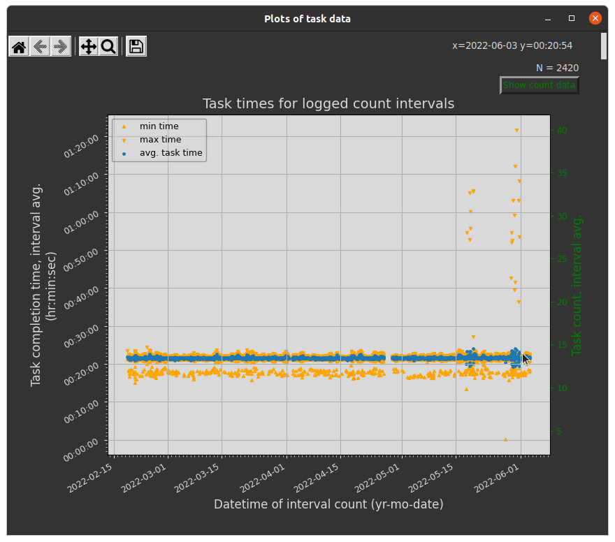
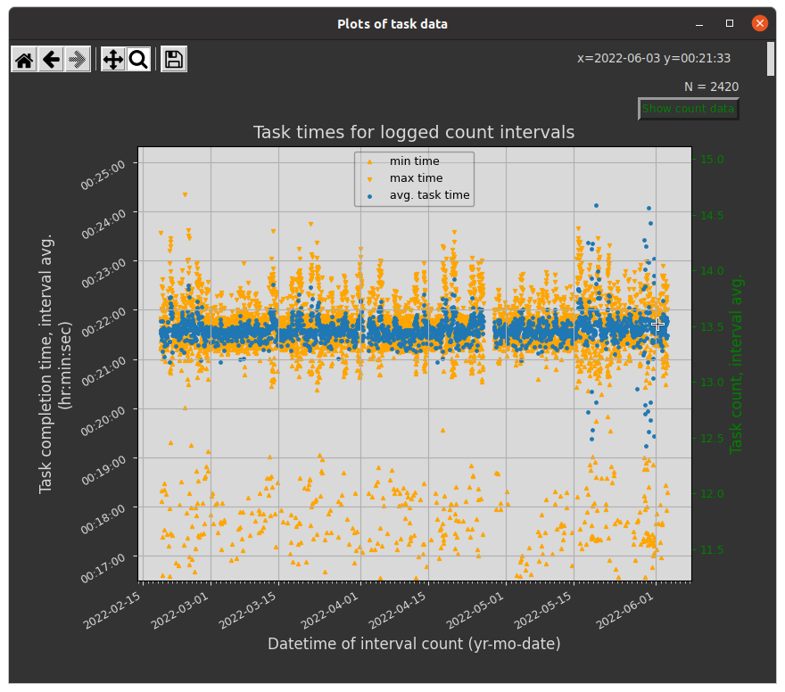
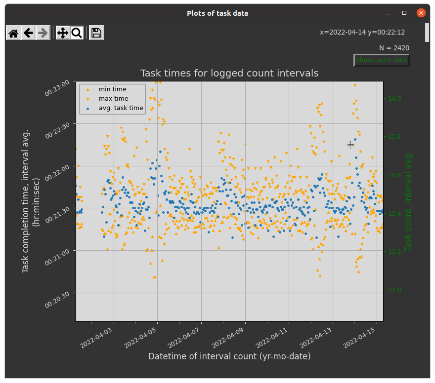
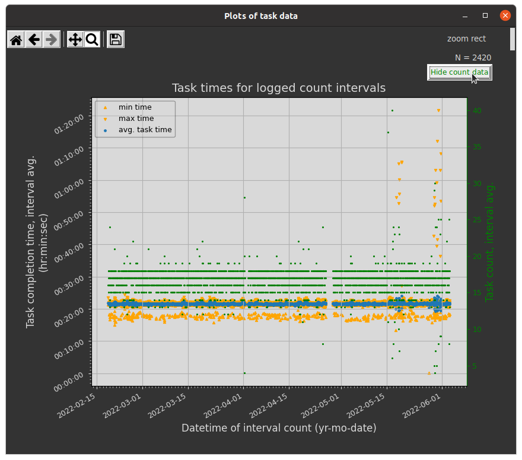
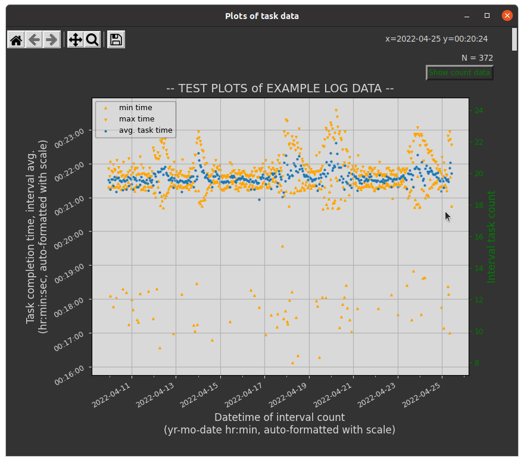

A utility for monitoring task data reported by the boinc-client. It may be useful for comparing task productivity between different computers or configurations. See further below for GUI and standalone implementations.
Developed with Python 3.8, under Ubuntu 20.04, Windows 10 and macOS 10.13. Unless running one of the standalones, you may need to download or update to Python 3.6 or later. Recent Python packages can be downloaded from https://www.python.org/downloads/.
Download the .zip package from the Code download button and extract to your favorite folder. From within the resulting countBOINCtasks-main folder, open a Terminal or Command Prompt window. The exact invocation on the command line may slightly differ depending on how your PATH environment variable is set. As with any downloaded Python program, it is recommended that it be run in a virtual environment to avoid conflicts with other Python programs.
Download and run as described under Usage, but launch the program with these Terminal or Command Prompt commands from within the parent folder:
python3 -m gcount-tasks
python -m gcount-tasks or py -m gcount-tasks
For a brief description and version number, use the --about command line option.
Features in the GUI version:


Iniitial plot of task time data in the log file.

Use of magnifier tool to zoom in on average task times.

Zoom in again for two weeks of task time data.

Initial view showing all logged task count data.

If the plotting function does not seem to be working, it can be tested with example log data provided with this distribution. From the Help menu, select "Test example data" to produce this plot window:

From the downloaded main folder, described above, open a Terminal and call up the help option with the following command:
./count-tasks --help -or- python3 count-tasks --help
python count-tasks --help -or- py count-tasks --help
Depending on your Python path settings in Windows, double-clicking on the count-tasks file icon may automatically launch the program, with its default settings, in a Terminal window.
Default settings assume a default location of the BOINC folder from the BOINC installer. If you have put the BOINC folder in a different location, then there will be a command line option to enter that custom path to run boinc-client's boinccmd (or boinccmd.exe) executable. A custom command path can also be added to the countCFG.txt configuration file to avoid entering the path on the command line.
~/countBOINCtasks-main$ ./count-tasks --help
usage: count-tasks [-h] [--about] [--log {yes,no}] [--interval M] [--summary TIMEunit] [--count_lim N]
optional arguments:
-h, --help show this help message and exit
--about Author, copyright, and GNU license
--log {yes,no} Create log file of results or append to existing log (default: yes)
--interval M Specify minutes between task counts (default: 60)
--summary TIMEunit Specify time between count summaries, e.g., 12h, 7d (default: 1d)
--count_lim N Specify number of count reports until program exits (default: 1008); 0 provides current data
Options can be abbreviated, e.g., ./count-tasks --l --i 15 --s 1h --c 12
Running the default settings (no optional arguments), will count the number of tasks reported to the BOINC Project server on a repeating interval of 1 hour, with summaries provided every 24 hr. Basic statistics for task times are also provided for each count interval. The initial data report provided immediately upon program launch is for the most recent tasks reported by boinc-client during the past hour. Repeating counts intervals begin after the initial report (see TIP, below).
Example report results, using default settings:
:~/CountBOINCtasks-main$ ./count-tasks
2021-Jul-21 06:14:14; Number of tasks in the most recent BOINC report: 11
Task Time: mean 00:19:25, range [00:13:14 - 00:21:05],
stdev 00:02:11, total 03:33:43
Total tasks in queue: 35
Number of scheduled count intervals: 1008
Counts every 60m, summaries every 1d
Timed intervals beginning now...
2021-Jul-21 07:14:18; Tasks reported in the past 60m: 12
Task Time: mean 00:20:29, range [00:18:47 - 00:24:41],
stdev 00:01:33, total 04:05:48
Total tasks in queue: 30
1007 counts remaining until exit.
13m ||||||||||< ~time to next count
A countdown timer displays, in a colored bar, the approximate time remaining until the next task count.
Running with the --log option will save data to the log file in the
working folder. This file is appended to or created when the program is
launched.
You can let count-tasks run in an open terminal window with negligible
impact on system resources. Stop it with Ctrl-C or let it stop
automatically. With default settings, it will stop after 6 weeks (1008
1hr count cycles). A different count cycle limit can be set with the
--count_lim option.
NOTE: Summary counts may be less than the sum of individual counts because
of persistence of reported tasks between count intervals. This can be
expected when the --intervaloption is set to less than the default 60
(minutes). The boinc-client command that provides reported task data
, boinccmd --get_old_tasks, retrieves tasks reported for the past hour
, independent of the utility's count interval. To avoid missing any
reported tasks, the --interval option has a 60 minutes maximum count
interval.
TIP: To get only the most recent task count and time metrics without
running count intervals, run: count-tasks --c 0
Note that these stand-alone programs will only run with the boinccmd binary in its default install location. If you launch a GcountTasks stand-alone and get an error message, you can still run gcount-tasks from the command line once you set up a valid boinccmd path in the countCFG.txt configuration file.
A Windows standalone of gcount-tasks is available. Download and extract the GitHub distribution package as outlined above. Inside the CountBOINCtasks-main/Standalone_distributables folder is GcountTasks_win.zip. Alternatively, this compressed file can be downloaded directly from https://github.com/csecht/CountBOINCtasks/blob/main/Standalone_distributables/GcountTasks_win.zip. Select 'Extract All' for the downloaded ZIP file. After extraction, the .exe extension may not show, depending on your system view settings. Double-click GcountTasks.exe to launch. Because this project is in the beta phase, along with the program GUI, a Command Prompt window will appear to display possible Python error messages. Closing the Command Prompt window will also close the GUI.
You will likely first need to permit Windows to run the .exe file: from the pop-up warning, click on "more info", then follow the prompts to open the program.
The GcountTasks.exe executable was created with PyInstaller, available from https://pypi.org/project/pyinstaller/
A Linux standalone of gcount-tasks python script is available. Download and extract the GitHub distribution package as outlined above. Inside CountBOINCtasks-main/Standalone_distributables folder is gcount-tasks_linux.zip. Alternatively, the archived program can be downloaded directly from https://github.com/csecht/CountBOINCtasks/blob/main/Standalone_distributables/gcount-tasks_linux.zip . Extract the archive and move the gcount-tasks executable file to a convenient location; double-click to launch. You may need to change its permissions to allow it to launch.
The gcount-task single file executable was created with PyInstaller available from https://pypi.org/project/pyinstaller/
A MacOS standalone of gcount-tasks is available. Download and extract the GitHub distribution package as outlined above. Inside CountBOINCtasks-main/Standalone_distributables folder is GcountTasks_mac.dmg. Mount that disk image and move the GcountTasks.app to your Applications folder or where ever you like. Alternatively, the distributable app can be downloaded directly from https://github.com/csecht/CountBOINCtasks/blob/main/Standalone_distributables/GcountTasks_mac.dmg.
The first time you try to open the app, however, you will get a message saying it can't be opened. Click "Cancel", go into System Preferences > Security & Privacy, click the "Open anyway" button, then "Open". It does not open initially because it was not downloaded from the Apple Store or from a recognized Apple developer.
The process of opening apps from unrecognized Apple developers can be somewhat streamlined by re-establishing (as of MacOS Sierra) the "Allow apps downloaded from: Anywhere" option in Security & Preferences. Do this with the following command line in the Terminal: sudo spctl --main-disable. Using the Finder 'Open' command directly on the unzipped app in its folder, can also somewhat reduce the hassle of navigating through System Preferences; once that is done, then any alias to the app should work smoothly. With any of these "fixes", you will, initially and appropriately, be prompted by the MacOS Gatekeeper to open the app.
The GcountTasks.app application was created with PyInstaller, available from https://pypi.org/project/pyinstaller/
Waiting for user feedback...